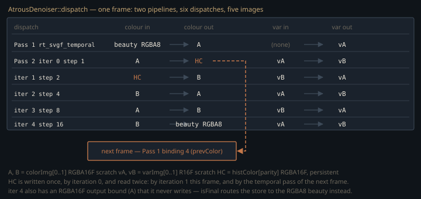

Monograph · Tree · ← Module hub · À-trous / SVGF-style
denoise
À-trous / SVGF-style
Internal spatial/temporal denoise compute.
Filtering the wrong image on purpose
Every other denoiser here wants linear radiance: NRD demodulated by albedo and split diffuse/specular, OIDN as HDR colour with albedo and normal AOVs. OHAO's own SVGF takes the opposite input — the RGBA8 image the realtime raygen has already run through ACES and a 1/2.2 gamma curve:
vec3 ldr = ACES(denoised * 0.5);shaders/rt/pt_raygen_realtime.rgen:1907It is also the last pass's destination — overwritten in place, so nothing downstream changes.
VkImage beautyImage = VK_NULL_HANDLE; // m_outputImage (RGBA8) — in AND final outohao/render/rt/denoise/atrous_denoise.hpp:20Nor is that input raw. `kRealtimeRTSettings` turns the in-raygen denoise on and nothing on the Atrous path clears it, so before the tonemap the raygen has already run a 5×5 edge-aware bilateral over every pixel whose local variance clears a threshold, then rescaled to preserve luminance. Its two wider passes re-read the centre's own running value and are algebraically identity, so SVGF gets a step-1 bilateral's output.
.enableInternalDenoise = true,ohao/render/rt/rt_settings.hpp:43Demodulation — divide out albedo, filter the illumination, multiply back — is the standard move, and it is what produced NRD's failure modes here: black metals and magenta casts from a mismatched guide. Filtering the composited image cannot produce either. The price: temporal average and spatial kernel both run on gamma-encoded values, so the mean of N frames is not the gamma of the mean radiance.
Pass 1: reprojection, and the two ways history dies
The temporal pass reads the motion-vector AOV — pixel-space `currPix - prevPix`, so the previous location is `pixel - motion`, snapped to the nearest texel. History must survive two per-pixel rejections: landing inside the image, and matching the geometry history this pass wrote last frame — view Z plus normal:
if (zrel > 0.1 || ndot < 0.9) valid = false;shaders/rt/rt_svgf_temporal.comp:78`zrel` normalises the depth difference by the larger of the two depths, so the 10% tolerance is scale-free; `ndot < 0.9` rejects beyond roughly 26° of rotation. Survivors blend into an exponential moving average that decays as history accumulates:
where $c$ is this frame's beauty, $c_{n-1}$ the reprojected history, and $n$ the per-pixel history length, clamped at 32. Without the floor the image stops responding to lighting changes; 0.05 caps the effective window at 20 frames — and since the floor binds at $n = 20$, the 32-frame clamp never changes $\alpha$.
float alpha = max(1.0 / newLen, 0.05);shaders/rt/rt_svgf_temporal.comp:97One storage detail is load-bearing. The depth AOV writes `1e30` for background, but the geometry history is RGBA16F, whose largest finite value is 65504 — `1e30` cannot round-trip. Clamping Z into fp16 range before storing is what makes background compare cleanly against foreground at a silhouette:
float curZc = min(curZ, 1.0e4);shaders/rt/rt_svgf_temporal.comp:60The moments, and why the first four frames are different
The same EMA is applied to the first and second raw moments of luminance, $m_1 = \mathbb{E}[l]$ and $m_2 = \mathbb{E}[l^2]$, giving a running variance:
with $l = 0.2126R + 0.7152G + 0.0722B$. This is the point of Pass 1: the spatial filter needs a per-pixel estimate of *how noisy this pixel still is*, and a temporal moment pair gives one for free — with the caveat above, that on the realtime profile $l$ is already-filtered luminance, so the moments measure residual noise, not Monte-Carlo variance.
A two-frame history gives a meaningless variance, so below four frames the pass also computes the spatial 3×3 luminance variance of the current beauty and takes the larger:
if (newLen < 4.0) {shaders/rt/rt_svgf_temporal.comp:109Freshly disoccluded pixels are driven entirely by that spatial estimate.
Pass 2: what the variance actually buys
The spatial pass is a 5×5 B3-spline à-trous wavelet — the same 25 taps every iteration, spacing doubling 1→16. Tap radius stays 2 at every level, so five dispatches reach a cascaded support radius of $2(1{+}2{+}4{+}8{+}16) = 62$ px for 125 taps; one gather over that 125×125 window would cost 15625. Each tap weight carries three edge-stopping exponentials:
$h_{ij}$ is the separable B3-spline weight, $c$ and $q$ index the centre and the tap, $z$ is linear view Z, and $\overline{\mathrm{Var}}$ is the centre variance after a 3×3 Gaussian prefilter, raw per-pixel variance being too noisy to weight on. $n$ is the world normal decoded from the `N*0.5+0.5` AOV but *not* renormalised as Pass 1 renormalises, so $n_c\cdot n_q$ can exceed 1 — two background texels decode to $(-1,-1,-1)$ and dot to 3. The clamp is what stops that from amplifying the weight instead of attenuating it. The luminance term is what differs from a plain à-trous, which weights squared RGB distance against a constant — the same for converged and noisy pixels:
w *= exp(-abs(cL - sL) / (sqrtVar * pc.sigmaL + 1e-6));shaders/rt/rt_svgf_atrous.comp:94Variance is the whole algorithm. Where $\mathrm{Var}$ is small the denominator collapses, any luminance difference drives $w \to 0$, and a converged pixel keeps its detail; where it is large the weight stays near 1 and the filter averages aggressively. The kernel never changes — only its willingness to cross an edge.
Variance is filtered alongside colour, but with the *square* of each tap weight: the variance of a weighted mean of independent samples scales as $\sum w^2 / (\sum w)^2$, not as the mean of the variances.
σ_l = 0.4, and how it was chosen
The three sensitivities are compile-time constants, overridable by env var for sweeps, and the source records the measurement that settled `kSigmaL`: at σ_l = 4 the result came out *smoother than* the plain à-trous (mean |Laplacian| 3.25); at σ_l = 0.4 it beat both the plain filter (5.70 vs 4.38) and OIDN (4.98) at matched flat-metal noise.
constexpr float kSigmaL = 0.4f; // luminance weight (scaled by sqrt(variance))ohao/render/rt/denoise/atrous_denoise.cpp:38The recorded rationale is structural: Pass 1 has already removed most of the noise, so Pass 2 only cleans a residual — and on the realtime profile the in-raygen bilateral took some first. A spatial stage doing the heavy lifting needs a permissive σ_l; one following a strong temporal stage must not.
The schedule, and the image that is three things at once

Five iterations need only two scratch colour images: the persistent history doubles as the third. Iteration 0 writes `histColor[parity]`, at once iteration 1's input and next frame's history — SVGF's standard feedback point, the first wavelet level being stable without losing the detail wider iterations destroy.
const VkImageView inColor[kNumIterations] = { A, HC, B, A, B };ohao/render/rt/denoise/atrous_denoise.cpp:482All five descriptor sets are written before the first dispatch is recorded: a set bound by a recorded command cannot be updated, so rewriting one between dispatches would be invalid.
The motion vectors SVGF actually receives
Atrous mode forces `historyFrameCount = 0` in the raygen push constants every frame, so the engine's cross-frame accumulation is bypassed and the denoiser owns temporal integration. (How many paths it carries is a separate control, `samplesPerFrame`, averaged in-raygen.) Two of the three raygen variants gate motion-vector output on that same zeroed counter:
if (firstHitDist > 0.0 && historyFrameCount > 0u) {shaders/rt/pt_raygen_offline.rgen:207With the offline profile bound it is false on every Atrous frame, so the motion-vector AOV is identically zero and reprojection degenerates to `prevPixel == pixel` — the smaller problem there. That profile also resets accumulation on view change, which raises `pc.reset` and makes Pass 1 discard *all* history unconditionally — not per-pixel, not by geometry test — for every frame the camera moves. The realtime raygen was fixed by gating on the frame index, which advances in all modes:
if (firstHitDist > 0.0 && frameIdx > 0u) {shaders/rt/pt_raygen_realtime.rgen:421The interactive viewer defaults to the realtime profile, so the shipping path gets correct vectors; the other two raygens do not.
Two compiled shaders that nothing runs
`AtrousDenoiser` creates exactly two pipelines, from `rt_rt_svgf_temporal.comp.spv` and `rt_rt_svgf_atrous.comp.spv`. The CMake glob compiles every `.comp` under `shaders/`, so `rt_atrous.comp` and `denoise_atrous.comp` also produce SPIR-V — but nothing loads either name, and the `RTDenoiser` that would have driven them is a header with no translation unit and no callers.
Contracts
- Beauty, normal, depth and motion must be in `VK_IMAGE_LAYOUT_GENERAL` behind a `RAY_TRACING → COMPUTE` barrier before `dispatch()`; the denoiser barriers its own six dispatches but never transitions borrowed inputs.
- Iteration 0's colour output *is* next frame's history. Editing the ping-pong tables without moving the history binding breaks accumulation silently — the image still denoises, it never converges.
- `resetHistory` fires when `m_historyFrameCount == 0`: first frame, or any `resetAccumulation()`. The realtime profile does not call it on a camera move, so history survives the drag; the offline profile's `resetsAccumulationOnViewChange()` returns true, so every moved frame resets and SVGF filters one frame alone.
- History images are framebuffer-sized, destroyed and re-created on resize; the first-frame `UNDEFINED → GENERAL` latch re-arms with them.
- `--denoise=atrous` has no build-time gate, unlike `nrd` and `dlssrr`, which fall back to `none` when their libraries were not built.
Source files
shaders/rt/pt_raygen_realtime.rgenohao/render/rt/denoise/atrous_denoise.hppohao/render/rt/rt_settings.hppshaders/rt/rt_svgf_temporal.compshaders/rt/rt_svgf_atrous.compohao/render/rt/denoise/atrous_denoise.cppshaders/rt/pt_raygen_offline.rgenshaders/compute/denoise_atrous.compshaders/rt/rt_atrous.compParent hub for the full pipeline narrative; this page is the file-level design unit. Sitemap · hover glossary terms anywhere.